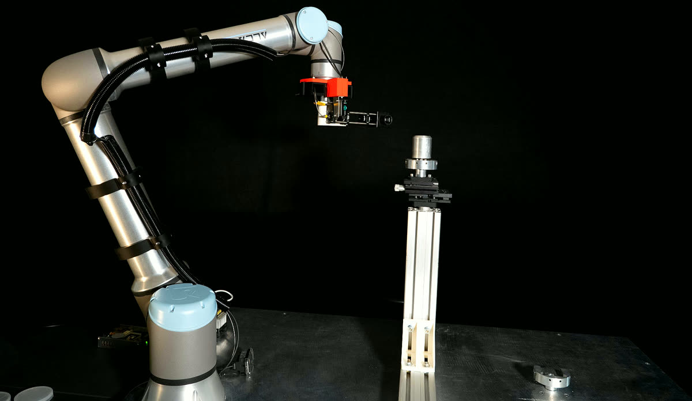
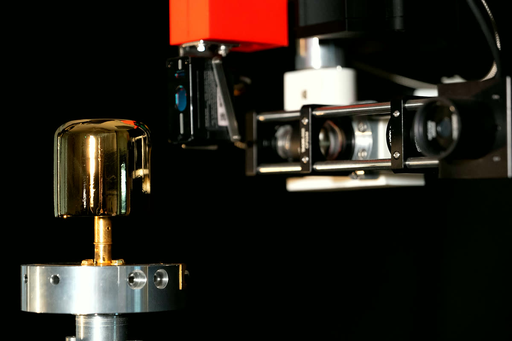

Equipment › Pattern and coat
Robotic 3D photolithography
Collaborative robot with UV projector and precision dispensing
Maskless photolithography on curved and non-planar surfaces.
Work with us on this instrument
What it does
Photolithography usually needs a flat wafer and a mask. Here a collaborative robot carries a UV projector over the part and exposes the resist one field at a time, with no mask. The robot keeps the projector at the right distance and angle, so the pattern lands where it should on curved and non-planar surfaces too.
The pattern is a digital image: changing a design takes minutes instead of a new mask, and the same tool exposes flat test pieces and three-dimensional parts.
The robot also carries a precision peristaltic pump. It lays down measured amounts of silicate solution along a programmed path, the first step of glue-free bonding of curved optics.
What we use it for
Contacts on non-planar germanium
3D photolithography of metal films on germanium crystals with non-planar surfaces, for γ-ray detectors in the INFN N3G project.
Curved X-ray optics
Silicate dispensing for bonding the curved optics of X-ray telescopes, with INAF Brera.
Quick prototypes
Tests of new patterns without waiting for a mask.
Working with us
If your part is curved, or your pattern changes too often to make masks, we can test the exposure on a sample with you.
